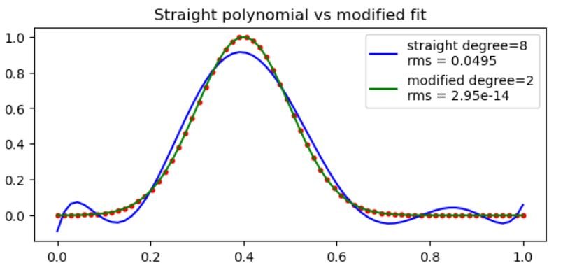
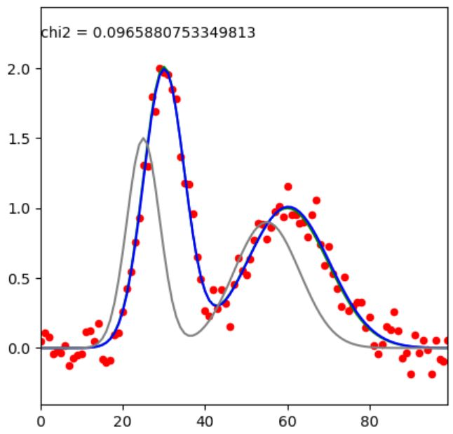

Animation of a wavepacket propagating through a barrier
(quantum tunneling) or trapped in a harmonic potential using the
Time-Independent Schrodinger Equation (TISE).
Open the web page with the
Notebook output (background and animations) Download the
Jupyter Notebook program with background theory (right click)
Numerical model of quantum wavepacket dynamics using the
time-dependent Scrödinger equation: Animation of
tunneling through a barrier in 1D and 2D. Harmonic and anharmonic traps.
Open the web page with
the Notebook output (background and animations) Download the
Jupyter Notebook program with background theory (right click)
Polynomial fit (regression): theory, Python implementation, usage example
 Open the web page with
the Notebook output (background and animations) Download the Jupyter program with background theory (right
click)
Simplex fit (find minimum of any finction): theory, Python implementation, examples
 Open the web page with
the Notebook output (background and animations) Download the Jupyter Notebook program with background theory (right
click)